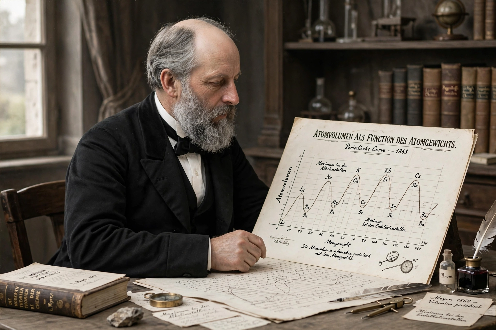

| Lothar Meyer | |
|---|---|
 Meyer and his curve of atomic volumes | |
| Born | Julius Lothar Meyer, 19 August 1830, Varel, Grand Duchy of Oldenburg |
| Died | 11 April 1895 (aged 64), Tübingen, German Empire |
| Known for | Independent formulation of the periodic table; atomic volume curve |
| Fields | Chemistry |
| Institutions | University of Tübingen; Karlsruhe Institute of Technology |
Julius Lothar Meyer (19 August 1830 – 11 April 1895) was a German chemist who, working independently of Dmitri Mendeleev, developed a periodic classification of the chemical elements. His graph of atomic volume against atomic weight — one of the most famous curves in chemistry — displayed the periodicity of elemental properties with striking clarity.
Meyer was born in Varel, in the Grand Duchy of Oldenburg, the son of a physician. Intending to follow his father into medicine, he studied at Zurich, Würzburg (where he took a medical degree in 1854) and Heidelberg, where Robert Bunsen's teaching drew him into chemistry. He habilitated at Breslau, taught at the forestry academy at Eberswalde and the polytechnic at Karlsruhe, and in 1876 became the first professor of chemistry at the University of Tübingen, where he remained until his death.
In his textbook Die modernen Theorien der Chemie ("Modern Chemical Theory", 1864), Meyer published a table of 28 elements arranged by atomic weight in six families defined by their valency — a system strikingly similar in spirit to Mendeleev's, though less complete. He expanded the table in later editions, and by 1870 had published a fuller table along with the atomic volume curve: plotting the atomic volumes of the elements against their atomic weights produced a saw-tooth wave in which the alkali metals sit at the peaks, a vivid demonstration that physical properties, too, are periodic functions of atomic weight.
Unlike Mendeleev, Meyer did not commit himself publicly to detailed predictions of undiscovered elements, and he hesitated to reorder elements when weights and properties conflicted. When Mendeleev's predictions were confirmed in the 1870s–80s, priority for the periodic system became contentious; Meyer himself acknowledged that Mendeleev's boldness had earned him the greater credit. The Royal Society recognised both men with its Davy Medal in 1882.
Meyer worked on the physical chemistry of gases and solutions, blood-gas physiology, benzene's structure, and the determination of atomic weights at high temperatures. His textbooks were influential in German chemical education, and he served as rector of the University of Tübingen. He died of a stroke in 1895 while still in post.